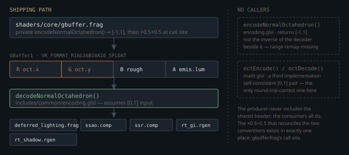

Monograph · Tree · ← Sitemap · Common includes
shaders
Common includes
math, color, encoding, reconstruction, constants, types.
Eight headers, one preprocessor, no module system
`glslc` has no modules. `GL_GOOGLE_include_directive` splices text, and OHAO's shader build hands the compiler two search roots — the `shaders/` tree and `shaders/includes/` — so one header can be reached under more than one spelling and more than once per translation unit.
COMMAND ${GLSLC} --target-env=vulkan1.3 -I${CMAKE_CURRENT_SOURCE_DIR} -I${CMAKE_CURRENT_SOURCE_DIR}/includes ${SHADER} -o ${SPIRV}shaders/CMakeLists.txt:46That is why every file here opens with an `#ifndef OHAO_..._GLSL` guard, and the guards are load-bearing rather than habit. Compiling `forward.frag` reaches `math.glsl` three separate times: directly, again through `brdf_ggx.glsl` → `brdf_common.glsl`, and a third time through `light_attenuation.glsl`. Strip the guard and `saturate` is redefined twice and the shader fails to compile. The same shader pulls `types.glsl` and `constants.glsl`, which both `#define MAX_LIGHTS 8`. That collision is harmless — `glslc` rejects a redefinition only when the substitution *differs* — so the `#ifndef MAX_LIGHTS` wrapper in `constants.glsl` is not what lets the two coexist; agreeing on `8` is. `deferred_lighting.frag` proves it, spelling the macro out unconditionally after `brdf_ggx.glsl` has already dragged `constants.glsl` in, and shipping anyway. What breaks the build is a third copy drifting to `16`.
#define MAX_LIGHTS 8 // Must match C++ MAX_LIGHTS in offscreen_renderer.hppshaders/core/deferred_lighting.frag:29The absence of a module system has a second consequence that shapes everything below: nothing *obliges* a shader to use these headers. `common.glsl` declares itself the bootstrap every shader should include first. No shader includes it.
// This file should be included first in all shaders to establishshaders/includes/common/common.glsl:7The transitive chain deferred lighting depends on without naming
`constants.glsl` looks like a bag of macros nobody needs. It has exactly one live consumer, three includes down. `brdf_ggx.glsl` — the BRDF the deferred and forward fragment shaders call — spends `EPSILON` at six sites. Three are genuine division guards, `max(denom, EPSILON)` in the GGX distribution, in the Schlick-GGX geometry term and in the height-correlated Smith visibility:
return a2 / max(denom, EPSILON);shaders/includes/brdf/brdf_ggx.glsl:38The other three are `max(dot(N, V), EPSILON)` lower bounds on a cosine. Nothing is divided there; they only keep a grazing `NdotV` or `NdotL` off exact zero before it is fed to the three that are.
`brdf_ggx.glsl` never includes `constants.glsl`. It includes `brdf_common.glsl`, one hop away, which includes `math.glsl` — for `saturate` and `INV_PI`, both of which it genuinely uses — and `math.glsl` includes `constants.glsl`, annotating the line with the reason.
#include "includes/common/math.glsl"shaders/includes/brdf/brdf_common.glsl:12Every link on that chain is declared, then, except the last consumer: `brdf_ggx.glsl` reads `EPSILON`, `PI` and `INV_PI` while naming no file that defines any of them. Dropping `math.glsl` from `brdf_common.glsl` because "it only uses saturate, let's inline it" is a hard compile error, and it fires at the edit site first — `saturate` in both Fresnel functions, `INV_PI` in both diffuse lobes — before the cascade reaches `brdf_ggx.glsl` at all. An undefined macro in GLSL stays an identifier rather than becoming zero, so there is no `inf` to observe: the build simply stops.
The Light struct is the one hard ABI here
`types.glsl` is not a utility header; it is a GPU-side mirror of a C++ struct. Its `Light` is four `vec4`s plus a `mat4` — 128 bytes in std140 — and it is the type that `forward.frag` and `shadow_depth.vert` use to declare their light UBO array.
mat4 lightSpaceMatrix; // Transform to light space for shadow mapping (64 bytes)shaders/includes/common/types.glsl:24The C++ side pins the size at compile time; the GLSL side has no equivalent check, so the assert protects only half the boundary.
OHAO_ASSERT_GPU_LAYOUT(LightData, layout::kLightDataBytes);ohao/gpu/vulkan/renderer.hpp:91There is also a naming contract that only a comment enforces. `types.glsl` gives you the struct; the *includer* declares the UBO; and `shadow_pcf.glsl`, spliced in afterwards, reads that UBO by the bare global name `lighting` at seven sites without ever declaring it. It is the only header on the live translation unit that does — `blinn_phong.glsl` has the same habit but sits in the `#else` branch that `USE_PBR` defaulting to 1 compiles out, and `light_attenuation.glsl` takes everything by parameter.
// CRITICAL: Include files access this UBO directly by name "lighting"shaders/core/forward.frag:37Move that one include above the UBO declaration and the failure is an undeclared identifier in a file you did not touch.
Octahedral normals: three encoders, two decoders, one of each ships
A unit normal has two degrees of freedom but three components. Octahedral mapping trades a little angular precision for a channel: project the normal onto the L1 unit ball,
which is a bijection from the upper hemisphere onto the square $|p_x|+|p_y|\le 1$. The lower hemisphere ($n_z < 0$) is folded outward into the four corner triangles,
where $\odot$ is componentwise multiply and $\operatorname{sign}$ maps zero to $+1$. The result covers $[-1,1]^2$; storing it in an unsigned target needs one more step, $p \mapsto 0.5p + 0.5$.
That last step is where OHAO's version gets interesting. The shared decoder undoes the remap on entry, so it expects $[0,1]$:
vec2 f = encoded * 2.0 - 1.0;shaders/includes/common/encoding.glsl:16The shared *encoder* sitting immediately below it does not apply the forward remap — it returns $[-1,1]$ — so the two functions in the same file are not inverses. They never have to be, because the shared encoder has no callers at all. The GBuffer pass carries its own private copy of the projection and applies the range remap itself, at the call site:
vec2 encodedNormal = encodeNormalOctahedron(N) * 0.5 + 0.5;shaders/core/gbuffer.frag:124`math.glsl` then supplies a *third* implementation, `octEncode`/`octDecode`, which is the only self-consistent $[0,1]$ pair in the tree and has zero callers.
vec2 octEncode(vec3 n) {shaders/includes/common/math.glsl:177
The header comment justifies the packing by the GBuffer format, naming `A2R10G10B10`. The attachment is actually `VK_FORMAT_R16G16B16A16_SFLOAT` {{cite ohao/render/deferred/gbuffer_pass.cpp "attachments[1].format = VK_FORMAT_R16G16B16A16_SFLOAT;"}} so the precision argument for octahedral encoding does not apply — fp16 would hold a raw xyz normal comfortably. What the packing still buys is the *channel*: two components for the normal leaves `.b` for roughness and `.a` for emissive luminance in the same attachment. The rejected alternative — three components of raw normal — costs a fifth MRT attachment and its bandwidth on every GBuffer write. The comment is stale about the reason; the decision is still right for a different reason.
What the math and color headers actually deliver
`math.glsl` exports eighteen helpers. One of them reaches live code: `saturate`, at ten call sites, all inside `light_attenuation.glsl` and `brdf_common.glsl`. The other seventeen have no live caller. Thirteen have no caller at all — `remap`, `remapClamped`, `linearstep`, `fastAtan2`, `lengthSquared`, `safeNormalize`, `reject`, `getRotationMatrix`, `smoothHermite`, `smootherHermite`, `gain`, `packNormal`, `unpackNormal` — and so do `octEncode` and `octDecode` above. The last two, `project` and `bias`, are called only from inside this same file, by the already-dead `reject` and `gain`. Nothing is shadowed by an inlined copy either: the only `safeNormalize` in the engine is an unrelated C++ function in the physics module.
`math.glsl`'s `#define PI` fares no better. Six live shaders declare their own `const float PI = 3.14159265359;` rather than include it — the three IBL precompute passes (`brdf_lut.comp`, `equirect_to_cubemap.comp`, `prefilter_envmap.comp`), plus `ssao.comp`, `sky.frag` and `cinematic_composite.comp`, each with a C++ pipeline that loads its SPIR-V. Five more copies sit in files no pipeline loads: three under `_disabled/`, plus `gerstner.glsl`, reachable only from `_disabled/water/water.vert`, and `ibl.glsl`, which has no includers anywhere in the tree and goes further still, redeclaring `MAX_REFLECTION_LOD = 4.0` where `constants.glsl` already defines it.
`color.glsl` is the same shape. Its `tonemapACES` and `linearToSRGBFast` are called once each, from `forward.frag`; its `sRGBToLinear` is reached only from `material_sampling.glsl`, which nothing includes. Its `luminance` — the Rec.709 dot product this monograph's own source-tree summary promises as the tree's one definition — is used only by `adjustSaturation`, which is itself dead:
float luminance(vec3 color) {shaders/includes/common/color.glsl:80Meanwhile the same Rec.709 dot product appears inlined 48 times across the ten shaders the engine actually loads: all three path-tracer raygens (41 of those hits between them), both SVGF passes, the cinematic composite and bloom-extract computes, `bloom_threshold.frag`, `gbuffer.frag` and `dlss_tonemap.comp`. Two further copies live in files nothing reaches — `advanced_brdf.glsl`, a header with no includers, and `dof_composite.comp`, which no C++ names — and do not count. The shipping tonemap pass carries its own copy of the Narkowicz ACES fit rather than calling the shared one:
vec3 ACESFilm(vec3 x) {shaders/postprocess/tonemapping.frag:23Reconstruction and depth linearization sit mostly on dead pipelines
`reconstruction.glsl` has one live entry point: the `mat4` overload of `reconstructViewPos`, called twice by `ssao.comp`. The compact overload that takes `(1/proj[0][0], 1/proj[1][1], near, far)` to save 48 bytes of push constants is called only from `_disabled/ssr.comp`; `reconstructWorldPos` and `reconstructWorldDir` have no callers at all, and the header comment naming `cloud.comp` and `water.frag` as users of the latter is wrong on both counts — they live under `_disabled/` and neither calls it.
// Used by: cloud.comp, water.frag (ray origin/direction from screen pixel)shaders/includes/common/reconstruction.glsl:49Both depth linearizers in `encoding.glsl` are in the same position: `dof_coc`, `ssgi` and `volumetric_scatter` are their only callers and all three are disabled. The shader CMake globs recursively over the whole `shaders/` tree, so `_disabled/` shaders still compile to SPIR-V and still gate the build on these headers' syntax — they simply have no C++ that loads the module.
noise.glsl is a library nobody imports
The 264-line noise library — Hoskins hashes, value and gradient noise, fBm, ridged multifractal, domain warping, Voronoi, a directional dune profile — is included by exactly two files, both under `_disabled/terrain/`. No live pipeline pulls it. This monograph's own source-tree summary bills it as a hash for three consumers:
design=['Shared helpers for both raster and RT — keep one definition of luminance, safe normalize, etc.', 'encoding.glsl: octahedral / pack conventions used by GBuffer and AOVs.', 'noise.glsl: procedural hash for SSAO, particles, cloud density.'],site/tools/monograph/tree/shaders.py:23Two of the three do not survive a grep. `ssao.comp` samples a noise *texture* through a descriptor, and `sampleCloudDensity` takes a `sampler3D` rather than generating anything procedurally. The third is true in the way that hurts: `particle_emit.comp` does want a hash, and rolls a private integer bit-mixer — a shape the library does not offer, since every hash in it is float-valued.
uint hash(uint x) {shaders/particles/particle_emit.comp:40It is not alone, and the other three private hashes are worse news for the header than a rewrite would be. `rt_gi.rgen`, `rt_shadow.rgen` and `dlss_tonemap.comp` each carry a body byte-identical to `noise.glsl`'s `hash21` — the Hoskins `0.1031` construction, the `33.33` fold, the same return — under three different local names (`hash`, `hash`, `hash12`). The library was not rejected; it was copy-pasted past. `sky.frag` is the one genuine divergence: its `hash21` uses the `vec2(123.34, 456.21)` construction instead, so it alone generates a different sequence.
p = fract(p * vec2(123.34, 456.21));shaders/postprocess/sky.frag:42Before deleting anything under `includes/common/`, grep for an inlined private copy — this tree consistently prefers duplication to inclusion. And before "unifying" a duplicate into the shared header, check what the duplicate actually is: the octahedral encoders differ by a `×0.5+0.5`, and of the four float-valued private hashes three are verbatim copies of `noise.glsl`'s `hash21` while `sky.frag`'s is a different generator. A naive merge silently changes output rather than failing to build.
Contracts
- `gbuffer.frag`'s private encoder returns $[-1,1]$ and the `×0.5+0.5` remap lives at its call site; `decodeNormalOctahedron` assumes $[0,1]$. Change either half alone and every consumer's lower-hemisphere normals flip.
- `types.glsl`'s `Light` must stay field-for-field and 128 bytes aligned with C++ `LightData`. Only the C++ side is statically asserted.
- `types.glsl` must be included before the light UBO declaration, and the UBO must be named `lighting`, because `shadow_pcf.glsl` reads that global at seven sites without declaring it. (`blinn_phong.glsl` needs the same name, but only in the `USE_PBR 0` branch nothing compiles.)
- `brdf_ggx.glsl` gets `EPSILON` transitively through `brdf_common.glsl` → `math.glsl` → `constants.glsl` and declares none of it. That chain is required by the deferred lighting pass.
- `constants.glsl`'s `MAX_LIGHTS 8` must match `renderer.hpp`; its comment points at `src/renderer/offscreen/offscreen_types.hpp`, a path that no longer exists in the tree.
// See: src/renderer/offscreen/offscreen_types.hppshaders/includes/common/constants.glsl:8Source files
shaders/CMakeLists.txtshaders/core/deferred_lighting.fragshaders/includes/common/common.glslshaders/includes/brdf/brdf_ggx.glslshaders/includes/brdf/brdf_common.glslshaders/includes/common/types.glslohao/gpu/vulkan/renderer.hppshaders/core/forward.fragshaders/includes/common/encoding.glslshaders/core/gbuffer.fragshaders/includes/common/math.glslshaders/includes/common/color.glslshaders/postprocess/tonemapping.fragshaders/includes/common/reconstruction.glslsite/tools/monograph/tree/shaders.pyshaders/particles/particle_emit.compshaders/postprocess/sky.fragshaders/includes/common/constants.glslshaders/includes/noise.glslParent hub for the full pipeline narrative; this page is the file-level design unit. Sitemap · hover glossary terms anywhere.